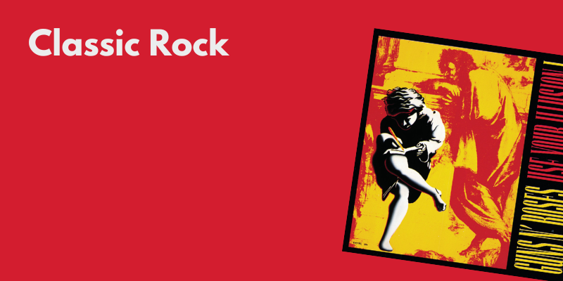

O que vamos ouvir hoje?
Wake Me Up - Avicii
Blinding Lights - The Weeknd
Judas - Lady Gaga
Say It Right - Nelly Furtado
motive (with Doja Cat) - Ariana Grande, Doja Cat
Solo (feat. Demi Lovato) - Clean Bandit, Demi Lovato
Lose Control - MEDUZA, Becky Hill, Goodboys
Nothing Breaks Like a Heart (feat. Miley Cyrus) - Mark Ronson, Miley Cyrus
Save Your Tears - The Weeknd
I Follow Rivers - The Magician Remix - Lykke Li, The Magician
Promiscuous - Nelly Furtado, Timbaland
boyfriend (with Social House) - Ariana Grande, Social House
Feels (feat. Pharrell Williams, Katy Perry & Big Sean) - Calvin Harris, Pharrell Williams, Katy Perry, Big Sean, Funk Wav
Moves Like Jagger - Maroon 5, Christina Aguilera
Adventure of a Lifetime - Coldplay
Locked out of Heaven - Bruno Mars
Never Forget You - Noisettes
Only Love Can Hur Like This - Paloma Faith
Wait a Minute! - WILLOW
Paradise - Coldplay
Your Song - Lady Gaga
Outside (feat. Ellie Gouldig) - Calvin Harris, Ellie Goulding
Die For You - The Weeknd
Give It To Me - Timbaland, Justin Timberlake, Nelly Furtado
Viva La Vida - Coldplay
Back To Black - Amy Winehouse
Harleys In Hawaii - Katy Perry
Sugar - Maroon 5
Dancing Queen - ABBA
Watermelon Sugar - Harry Styles
I Don't Want To Miss A Thing - Aerosmith
I Want to Know What Love Is - Foreigner
Bring Me To Life - Evanescence
Dream On - Aerosmith
Enjoy the Silence - Depeche Mode
Don't Speak - No Doubt
Changes - Black Sabbath
Californication - Red Hot Chili Peppers
Chop Suey! - System Of A Down
The Great Gig in the Sky - Pink Floyd
Highway to Hell - AC/DC
November Rain - Guns N' Roses
Knockin' On Heaven's Door - Guns N' Roses
Forest - Sysrtem Of A Down
Sweet Child O' Mine - Guns N' Roses
Meu Erro - Os Paralamas do Sucesso
Pais E Filhos - Legião Urbana
Pelados Em Santos - Mamonas Assassinas
Bete Balanço - Barão Vermelho
O Segundo Sol - Cássia Eller
Tempo Perdido - Legião Urbana
Era um Garoto, Que Como Eu, Amava os Beatles e os Rolling Stones - Engenheiros do Hawaii
Saideira - Skank
Lanterna Dos Afogados - Os Paralamas Do Sucesso
Como Tudo Deve Ser - Charlie Brown Jr.
Além do Horizonte - Jota Quest
Malandragem - Cássia Eller
Mulher de Fases - Raimundos
Vou Deixar - Skank
Anna Júlia - Los Hermanos
Lost in the Fire - Gesafelstein, The Weeknd
Kill Bill - SZA
Moonlight - Kali Uchis
Over - Lucky Daye
Popular - The Weeknd, Playboi Carti, Madonna
Not Around - Nova
American Boy - Estelle, Kanye West
Call Out My Name - The Weeknd
Mirrors - Justin Timbarlake
INDUSTRY BABY - Lil Nas X, Jack Harlow
Earned It - The Weeknd
Sure Thing - Miguel
Stevie Doesn't Wonder - Hotel Ugly
Honey See You - ISTERIF
Beautiful Girls - Sean Kingston
Reflections - The Neighbourhood
I Wanna Be Yours - Arctic Monkeys
The Less I Know The Better - Tame Impala
Why'd You Only Call Me When You're High? - Arctic Monkeys
Pumped Up Kicks - Foster The People
Not Allowed - TV Girl
Let It Happen - Tame Impala
Sweater Wheater - The Neighbourhood
Swing Lynn - Harmless
Mind Over Matter - Young the Giant
Atlantis - Seafret
505 - Arctic Monkeys
End of Beginning - Djo
Gilded Lily - Cults
The Beach - The Neighbourhood
Stressed Out - Twenty One Pilots
Little Dark Age - MGMT
Come a Little Closer - Cage The Elephant
Afraid - The Neighbourhood
Clocks - Coldplay
Just A Girl - No Doubt
Do I Wanna Know? - Arctic Monkey
I Feel Like I'm Drowning - Two Feet
Seven Nation Army - The White Stripes
Out of My League - Fiftz and The Tantrums
Creep - Radiohead
You Get Me So High - The Neighbourhood
Shut up My Momms Calling - Hotel Ugly
Dark Red - Steve Lacy
Apocalypse - Cigarettes After Sex
Friends - Chase Atlantic
For the First Time - Mac DeMarco
Softcore - The Neighbourhood
Riptide - Vance Joy
West Coast - Lana Del Rey
K. - Cigarettes After Sex
Lovers Rock - TV Girl
Black Out Days - Phantogram
Daddy Issues - The Neighbourhood
The Night We Met - Lord Huron
R U Mine? - Arctic Monkeys
Wicked Game - Chris Isaak
My Love Mine All Mine - Mitski
Goodbye Yellow Brick Road - Elton John
Young And Beautiful - Lana Del Rey
Heart To Heart - Mac DeMarco
Evergreen - Richy Mitch & The Coal Miners
golden hour - JVKE
idontwannabeyouanymore - Billie Eilish
Glimpse of Us - Joji
Chamber Of Reflection - Mac DeMarco
Sweet - Cigarettes After Sex
It Will Rain - Bruno Mars
Love In The Dark - Adele
Little Things - One Direction
UNDERSTAND - keshi
Heat Waves - Glass Animals
idfc - Tarro Remix - blackbear, Tarro
Borderline - Tame Impala
Space Song - Beach House
Stay High - Habits Remix - Tove Lo, Hippie Sabotage
Baby I'm Yours - Breakbot, Irfane
Little Dark Age - MGMT
Makeba - Jain
Shy Away - Twenty One Pilots
Wind Of Change - Scorpions
Starman- David Bowie
Don't Cry - Guns N' Roses
I Was Made For Lovin' You - KISS
No More Tears - Ozzy Osbourn
Eyes Without A Face - Billy Idol
Sultans Of Swing - Dire Straits
I'm Still Standing - Elton John
November Rain - 2022 Version - Guns N' Roses
Snow (Hey Oh) - Red Hot Chili Peppers
Menina Veneno - Ritchie
O Astronauta de Mármore - Nenhum De Nós
Você Não Soube Me Amar - Blitz
Como eu quero - Kid Abelha e os Abóboras Selvagens
Pela Luz do Olhos Teus - Miúcha, Tom Jobim
Burguesinha - Seu Jorge
Aonde Quer Que Eu Vá - Os Paralamas Do Sucesso
Cálice - Chico Buarque, Milton Nascimento
Vilarejo - Marisa Monte
Já Sei Namorar - Tribalistas

Anterior
Próximo